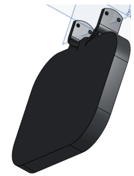
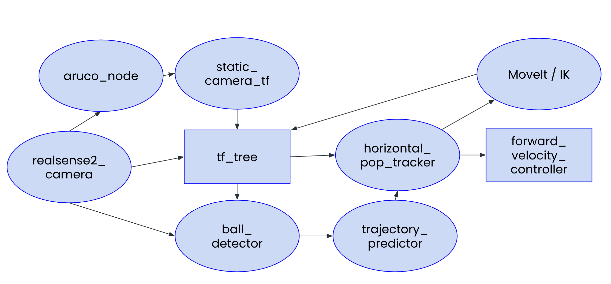

Design
End-effector
We designed the paddle end-effector to prioritize stable contact, consistent orientation, and repeatable bounce behavior.
- Design - Modeled a paddle gripper in Onshape using the official UR7e reference model to match mounting geometry precisely.
- Fabricate - 3D-printed in PLA and fit directly onto the arm; this direct fit was crucial for keeping the end effector flat during repeated balloon contact as opposed to having the arm hold a paddle for instance.
- Result - Achieved the surface area needed for both balloon and ball contact while keeping a low-profile form factor for more reliable, repeatable hits.


Software architecture

Nodes
aruco_node- finds an ArUco marker mounted on the robot base inside the RealSense color image and publishes its pose in the camera frame.static_camera_tf- turns that ArUco detection into a one-timebase_link → camera_linkstatic transform so every downstream frame is reachable from the robot tree.ball_detector- runs an HSV color mask on the RealSense point cloud, transforms the surviving points intobase_link, and publishes the centroid as/ball_pose.trajectory_predictor- buffers the last twelve/ball_posesamples, runs a least-squares fit (linear in x and y, gravity-aware in z) to smooth the position and pull a velocity estimate out of the slope, and publishes the result as/ball_state.horizontal_pop_tracker- runs the high-rate control tick: calls MoveIt IK for a joint target and pushes it through a joint-velocity PID out to/forward_velocity_controller/commands.
Pipeline
The diagram above traces the flow end-to-end.
- Camera-to-arm calibration with ArUco. We have an ArUco marker mounted on the UR7e base at a known offset. The aruco node picks it up in the RealSense color stream, and the static camera TF node chains the detected marker pose with that fixed marker-to-base offset to solve for the base-link to camera-link transform. The result gets latched as a static TF the first time it is solved, so from then on every ball detection comes out directly in base-link coordinates without any per-frame transform work (in the pipeline above, the parts involved here are realsense2_camera, aruco_node, static_camera_tf, and the tf_tree).
- HSV ball detection. The ball detector subscribes to the RealSense's depth-aligned color point cloud, runs an HSV mask on each point's packed RGB field, AND-s the result with a workspace bounding box, and averages the surviving points into a single centroid that gets published as the ball pose. We started out using YOLOv8 against the color image, but even with inference capped at 8 Hz it added too much latency before the predictor could fit a trajectory. Switching to HSV cut the per-frame cost down to a vectorized mask, which made the RealSense's RGB frame rate the bottleneck instead of our model (in the pipeline above, the parts involved here are realsense2_camera, the tf_tree, and ball_detector).
-
Tracking and the pop, both as PID on joint velocity.
On every control tick the horizontal pop tracker pulls the latest smoothed ball state from trajectory_predictor (which gives it both a denoised position and the velocity estimate the pop logic depends on), sets the paddle's XY target to the ball's current XY (with a calibrated paddle-to-ball offset baked in), keeps the Z target locked at the nominal paddle height, asks MoveIt IK for the joint configuration that puts the paddle there, and feeds the result through a 6-joint PID. The control law is u = target_vel + Kp(q* − q) + Ki∫(q* − q)dt + Kd(target_vel − q̇), with target_vel set to zero in the tracker, so it reduces to a PID on joint position error with a velocity-damping term. Crucially, the output u is a joint velocity command, not a position. It gets sent straight to the UR7e's forward velocity controller. The paddle therefore isn't snapping between setpoints; it's continuously chasing the ball's XY through joint-space velocity errors, which is what makes the tracking look smooth rather than stepwise.
The vertical pop is a second instance of the same PID class, but with more aggressive gains (roughly 2× the horizontal Kp across the joints). The swap is gated by the ball's measured state: when its vertical velocity is past the descending threshold, the ball sits inside the clearance window above the paddle, and the predicted time-to-contact falls inside a small bounce-lead window, the controller flips the Z target to nominal Z plus pop height and uses the vertical PID for that tick. As soon as any of those conditions stops holding, it falls right back into the horizontal tracking loop on the next tick (in the pipeline above, the parts involved here are trajectory_predictor, the tf_tree, horizontal_pop_tracker, MoveIt, and forward_velocity_controller).